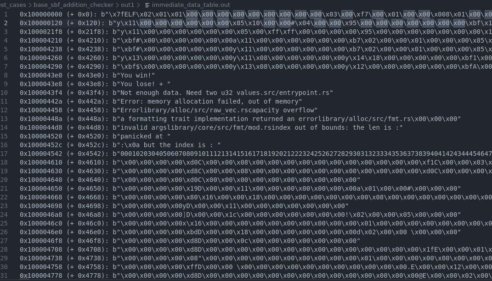

Immediate Data Tracking
sol-azy performs tracking of immediate values loaded from .rodata via LD_DW_IMM instructions.
This feature is crucial to recover strings, error messages, and embedded constants that are otherwise opaque in the bytecode.
How it works
Solana eBPF programs often use this pattern to load a constant string:
lddw r1, 0x1000043e8
mov64 r2, 9
- The
lddwinstruction loads an offset in.rodata - The
mov64gives a length (usually in bytes) - sol-azy uses these two to extract a slice of memory and decode it
If the memory region looks printable (ASCII-compatible), it is rendered as a string like:
b"You lose!"
Otherwise, a hex-escaped byte string is emitted.
Output File: immediate_data_table.out
This file lists all detected .rodata ranges accessed via LD_DW_IMM, whether or not they were also used in disassembly.
Format
Each line contains:
<absolute_address> (+ <relative_offset>): <decoded_bytes>
Example:
0x1000043e0 (+ 0x43e0): b"You win!"
0x1000043e8 (+ 0x43e8): b"You lose!"
0x100004434 (+ 0x434): b"Not enough data. Need two u32 values.src/entrypoint.rs"
The
relative_offsetis computed relative toMM_RODATA_START, and is used to index into the ELF's.rodatasection.
Visual Reference
Here's a screenshot of a real immediate_data_table.out file generated from a test case:

We can see:
- Success and failure strings:
"You win!","You lose!" - Panic messages
- Rust format strings
- Even full numeric patterns (e.g.
"00010203...")
Behind the scenes
The logic is handled by this function:
#![allow(unused)] fn main() { fn disassemble_wrapper( program: &[u8], analysis: &mut Analysis, imm_tracker_wrapped: Option<&mut ImmediateTracker>, path: P, ) }
Each LD_DW_IMM is analyzed, and its value is registered using:
#![allow(unused)] fn main() { imm_tracker.register_offset(insn.imm as usize); }
Then, for each tracked range:
- The
programis sliced using offset logic - The result is passed to:
#![allow(unused)] fn main() { pub fn format_bytes(slice: &[u8]) -> String }
which escapes non-printables and prints ASCII as-is.
LD_DW_IMM: Key Instructions and Address Keys
The tracking system is triggered exclusively by LD_DW_IMM instructions, which are used to load 64-bit constants.
When such an instruction loads an address greater than or equal to MM_RODATA_START, sol-azy considers it a .rodata access.
These addresses become the keys of the immediate_data_table.out output.
Example:
lddw r1, 0x1000043e0 ; ← This address becomes a key
mov64 r2, 8 ; ← Length hint
This results in:
0x1000043e0 (+ 0x43e0): b"You win!"
Range Truncation: Avoiding Overlaps
In programs with many LD_DW_IMM, multiple memory regions may point into the same .rodata segment.
To avoid overlap between two string regions, sol-azy performs forward truncation:
- It registers each
LD_DW_IMMaddress (new_start) - It finds the next closest start already known
- It truncates any overlapping previous entry so that no two extracted ranges overlap
This ensures that the memory region allocated for one string or constant does not accidentally contain bytes meant for another.
⚠️ Important Note on Partial Overlaps
The truncation mechanism ensures that two tracked .rodata regions do not overlap, but this does not imply that only the non-overlapping portion of earlier data is relevant.
For example:
- A
lddwat0x1loads 4 bytes of useful data. - Later, a
lddwat0x3uses only the high bits (e.g., last 2 bytes).
Even if these regions partially overlap in memory, the system still treats 0x1 as a distinct valid address for its own usage.
This means:
- The data at
0x1is still considered to start at0x1. - The data at
0x3is separately tracked, even if it falls inside a previously registered range.
The truncation is only used to split visible ranges in the output, not to reinterpret or cut off the semantics of earlier loads.
Example
Suppose:
lddw r1, 0x1000043e0 ; key #1
lddw r2, 0x1000043e8 ; key #2, appears later in bytecode
Even if the length for key #1 is unclear (or too long), sol-azy will truncate its range to stop at 0x1000043e8.
This avoids having "You win!" + "You lose!" accidentally merged into one blob, since both of them will be used independently by separate LD_DW_IMM instructions.
Support for sBPF v2+: Address Construction via
mov32+hor64In sBPF version 2 and above, the use oflddwfor loading 64-bit constants is forbidden. Instead, addresses are manually constructed using:mov32 r1, 0x3000 ; load lower 32 bits hor64 r1, 0x10000000 ; set upper 32 bits → r1 = 0x1000000000003000sol-azy handles this by:
- Tracking register values using a
RegisterTracker- Do an "emulation" of
movandhor64- Resolving loads like
ldxdw r2, [dst + off]wheredst + offpoints into.rodata- Extracting and decoding the pointed memory, same as for
lddwThis lets the disassembler annotate pointer-based loads even when addresses are assembled dynamically.
Internal Implementation
The tracking structure is a BTreeMap<usize, usize>:
#![allow(unused)] fn main() { pub struct ImmediateTracker { ranges: BTreeMap<usize, usize>, // start => end } }
Each register_offset(new_start) will:
- Locate the next start value already in
ranges - Set
new_end = next_start - Truncate any existing range that would overlap with
new_start
This is enforced even if the memory contents could technically overlap — correctness is prioritized.
When this matters
This tracking is especially useful when:
- The program includes panic messages
- You want to recover hardcoded strings (e.g.
"owner mismatch") - You're analyzing solana_program syscalls with string-based I/O
- You want to reverse undocumented or obfuscated logic
Tips
- Use
--mode disassor--mode bothto enable this feature - If a string appears truncated, check the corresponding
mov64for its length - If no
mov64follows alddw, the default read length is ~50 bytes for the CFG rendering